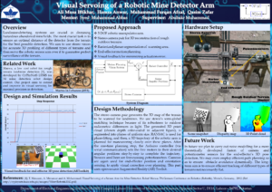
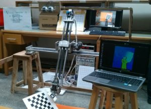
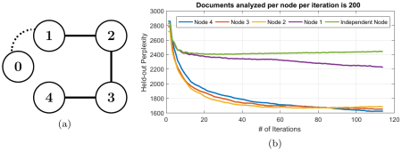
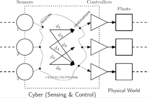

Automotive Control:
- Multivehicle Commercial Fleet Design and Operations Optimization (2022-23) – Submitted for publication (2023)
Framework development for vehicle routing problems that seeks to minimize total cost of ownership for battery-electric, plug-in hybrid electric and conventional powertrains, using realistic urban geospatial and traffic data - Powertrain Design and Control Co-optimization using Coordination Schemes (2021) – Published in ASME J. Dyn. Sys., Meas., Control (2023)
Software tool development that jointly performs powertrain architecture/component selection/design and dynamic control optimization, using various coordination algorithms such as Analytical Target Cascading and Simultaneous (all-at-once) schemes. - Mixed-Integer Optimal Powertrain Control using Pseudo-Spectral Collocation (2019-20) – Under review in IEEE TCST (2021) and in Applied Energy (2023)
Developed a comprehensive benchmarking optimization framework to solve large-sized (e.g., 13-state 4-control) mixed-integer optimal control problems in electrified powertrains, applying to various powertrain architectures and scenarios
Robotics:
[Download my code-sample]
-
Aerial Inspection of Siltation in Waterways (2014-15) [document][video] Published in IEEE/RSJ IROS 2015
-
Visual Servoing of Robotic Mine-Detector Arm (2013-14) [document][poster]
Landmine detection systems are crucial in demining hazardous abandoned minefields. The most crucial task is to ensure an optimal distance of the detector from the terrain: this is a hard problem because essentially a demining system has two major constraints; firstly to keep the end effector closest to the ground for high accuracy of detection, and secondly, to keep it far enough to prevent collision with the ground while scanning. Dealing with the second constraint is much more complex due to the inclusion of sensor noise and actuator uncertainties, which introduce a significant amount of variability in the motion of the arm. The bounds on the errors present an ill-posed research problem that must be tackled with. We aim to use a low cost stereo camera pair for 3D profiling of the terrain, and then servo the robotic sensor arm with a calculated precision when hovering over the terrain. [video]
-
Volumetric Estimation of Contained Soil using 3D Sensors (Summer ’13) [document] Published in CVT 2014
-
Vision-based Position Control of a Ball on a Plate (Fall ’13) [document][videos]
Two dimensional control of a metallic plate for balancing of a ball involving visual sensing through webcam. MATLAB and Simulink used for image processing and real-time feedback control.
{kind=link}
Machine Learning:
- ADMM-based Networked Stochastic Variational Inference (Fall ’15 – Summer ’17) [draft][detailed_old_draft]Owing to the recent advances in “Big Data” modeling and prediction tasks, variational Bayesian estimation has gained popularity due to their ability to provide exact solutions to approximate posteriors. One popular technique for approximate inference is stochastic variational inference. It poses variational inference as a stochastic optimization problem and iteratively solves it using noisy gradient estimates. It handles massive data for predictive and classification tasks by applying complex Bayesian models having both observed and latent random variables.
Our work aims to decentralize SVI allowing parallel computation, secure learning and robustness benefits. We use Alternating Direction Method of Multipliers to first develop a distributed SVI algorithm such that independent learners running inference algorithms only require sharing the estimated model parameters instead of their private datasets. Further, we extend the distributed SVI-ADMM algorithm to an ADMM-based networked SVI algorithm in which not only do the learners work distributively but they share information according to the rules of a network, depicted as an un-directional fully connected graph.
We illustrate the results on latent Dirichlet allocation (LDA) topic model in large document classification, compare performance with the centralized algorithm, and use numerical experiments to corroborate the analytical results. It shows that the use of ADMM with SVI exhibits reinforcement learning – all collaborating learners benefit in improving their estimates from each other. - Online Learning with Experts Advice in Distributed Wireless Networks (Spring ’17) [document][poster]
-
Content Based Video Retrieval (Spring ’14) [document]
Systems and Control:
-
Minimax Game-Theoretic Approach to Multiscale H-infinity Optimal Filtering (Spring ’17) [document][arXiv] Published in IEEE GlobalSIP 2017
-
Minimax Robust Optimal Control of Multiscale Linear-Quadratic Systems (Fall ’16) [document] Published in IEEE CISS 2017
-
Optimal Control of Delayed and Dynamic Networked Control Systems (Spring ’16) [document]
Prevalent advances in ‘Internet of Things’ (IoT) has offered interaction of cyber-physical systems for sensing and actuation tasks over the Internet. Cloud computational capabilities have even enhanced such cutting-edge technologies scaling up to critical remote sensing and actuation tasks such as tele-operation, mobile robotics and traffic regulation, promising the future of smart living in smart cities. Internet serves as the communication backbone for these networked systems entailing the advantages of simplicity of use, cost-affordability, unmatched availability and cloud power. The network and control relationship is a core dimension in the design of networked systems and recent trends are in developing co-design solutions to, for instance, the network congestion control scheme and the feedback system’s control law design. But, the Internet use for such time-critical systems brings its devils along: packet losses, time-varying time-delays, delay variations and unpredictability of network dynamics. Network analysis are mathematically complex and a natural game-theoretic framework underpins the whole IoT control scheme design problem. We intend to develop a stable congestion control mechanism in Internet-like networks involving dynamic cyber-physical systems under cooperative game-theoretic framework.